Matched archived States and appearances. Source frames are the unchanged, isolated CPU/GPU captures. Candidate renders are newly measured. These are measured residuals, not claims of pixel parity. MSE uses RGB values normalized to [0,1].
Seed 17, case 6, step 32; frame 39. GPU vs source GPU MSE: 0.102956467 → 0.000414547457.
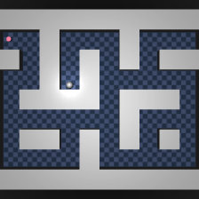
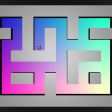
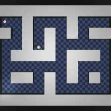
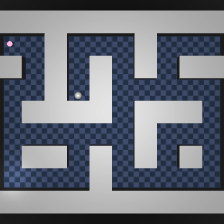
Seed 17, case 20, step 0; frame 114. GPU vs source GPU MSE: 0.0102497852 → 0.00919953005.
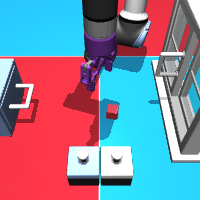
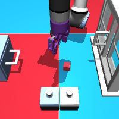
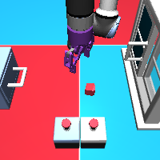
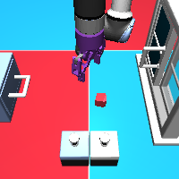
Seed 42, case 2, step 499; frame 16. GPU vs source GPU MSE: 0.000344204369 → 0.000131136605.
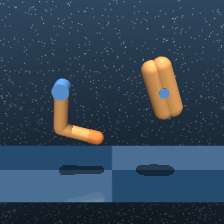
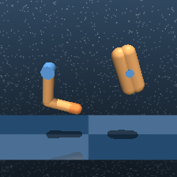
Seed 17, case 1, step 499; frame 10. GPU vs source GPU MSE: 0.000197773247 → 0.000159785013.
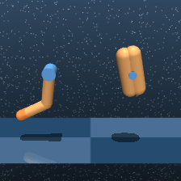
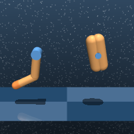
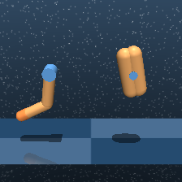